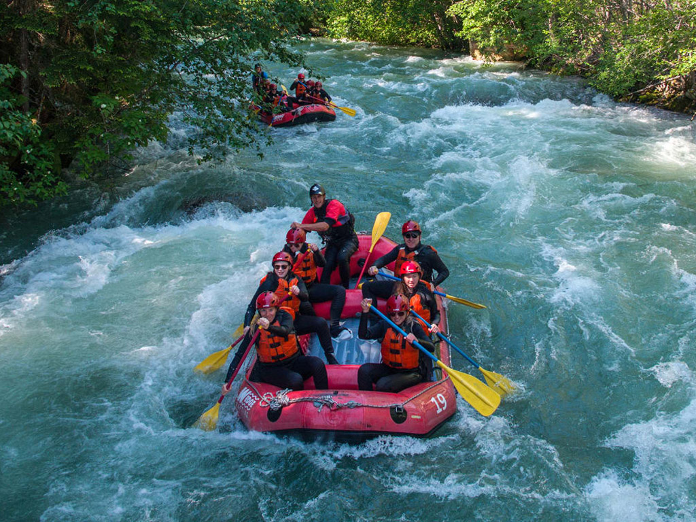

|
Cloud 9 Surfing Tower (Siargao)Cloud 9 - one of the most well-known waves world wide and one of the best in the Philippines, is a perfect barreling right hand reef break that can be both fun and challenging. View All Places |
Hinatuan Enchanted River (Surigao del Sur)The Hinatuan Enchanted River in Mindanao, Philippines, is a flawless saltwater river that flows into the Pacific Ocean.It is around 80-feet deep, and just barely long enough to be considered a river View All Places |
|  |
Whitewater Rafting (Cagayan de Oro)Kick-off your adrenaline rush in CDO with whitewater rafting at the Cagayan River. The body of water spans as long as 48 kilometers over 59 rapids, and it’s sure to take you on a wild ride. View All Places |

|
Maria Cristina Falls |